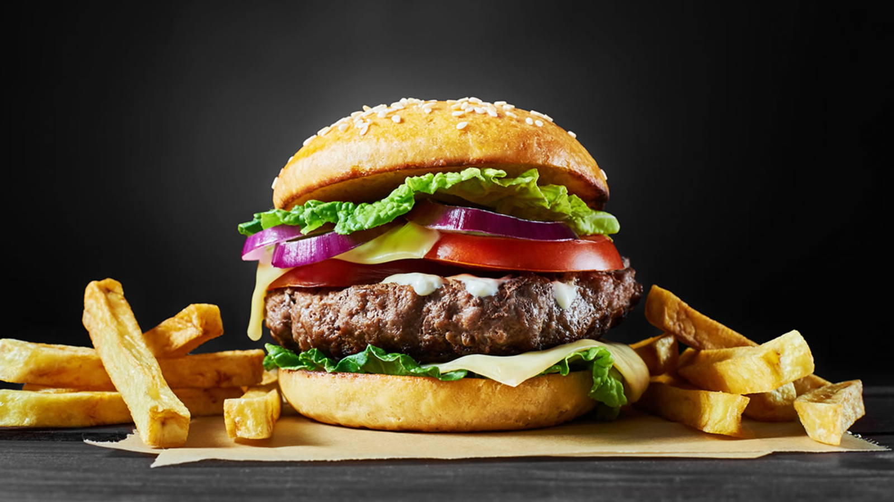

Chee Borgror

Description
Ingredients
- 1 lb ground beef, 20% or more fat ratio
- Onion, chopped or powder
- Garlic, chopped or powder
Directions
- Form patties with the beef. Use high-fat ground beef, you wont need oil.
- Place into a pan, pre-heated or otherwise, at medium/med-high temperature.
- Add salt, pepper, and optional seasonings.
- Cook until done, flipping occasionally to prevent burning.